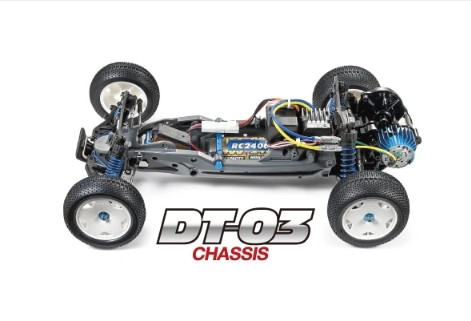

🚗 タミヤ DT-03

画像提供：タミヤ公式
📋 基本情報
| メーカー | タミヤ（Tamiya） |
|---|---|
| 機種名 | DT-03 |
| 型番 | 58587（ネオマイティフロッグ）、58628（レーシングファイター）など |
| 発売時期 | 2014年2月（ネオマイティフロッグ） |
| 生産状況 | 現行販売中 |
| カテゴリー | ラジコンカー（1/10スケール 電動RCカー） |
| サブカテゴリー | バギー / 2WD（初心者向け） |
📏 シャーシスペック
| 全長 | 400mm |
|---|---|
| 全幅 | 244mm |
| 全高 | 134mm |
| ホイールベース | 287mm（ロングホイールベース） |
| フレーム | モノコックフレーム |
| 駆動方式 | 後輪駆動（2WD） |
| デフギヤ | デフギヤ内蔵（密閉式ギヤボックス） |
| ステアリング | 3分割タイロッド式 |
| サスペンション | 4輪ダブルウィッシュボーン（ロングアーム） |
| ダンパー | フリクションダンパー |
| モーター | 540タイプ（キット付属） |
💡 特徴
🎓 2WD入門に最適
とても扱いやすい2WDなので、初心者にも2WD入門にも最適。シンプルな構成で組み立てやすく、修理しやすい設計。
📏 ロングホイールベース設計
287mmのロングホイールベースにより、荒れた路面でも安定感ある走りを生み出す。バッテリーをセンターに縦置き、RCメカも車体中心線上にセットした高バランス設計。
🏗️ モノコックフレーム
軽量で強度の高いモノコックフレームを採用。スリムなフォルムも特徴で、ギヤボックスはリヤエンドに搭載し、砂や小石の侵入を防ぐ密閉式。
🔧 高いカスタム性
オプションパーツが豊富で、成長に合わせてステップアップできる。室内と室外で補強の度合いを変えられる柔軟性。
🔧 ぽすとそに工房での修理実績
修理難易度
★
★
★
★
★
非常に簡単（初心者向け）
よくある故障・注意点
- フロントが軽いため、初心者のジャンプ時にミスをしてモーター周りの部品損傷 - ジャンプ着地時の注意が必要
修理のポイント
- 室内と室外で補強の度合いを変えたほうがいい - 使用環境に合わせた補強が重要
- シンプルな構造 - 部品点数が少なく、修理しやすい
- パーツ入手性 - 現行モデルのためパーツが入手しやすい
その他の特徴
- とても扱いやすい2WD - 初心者にも2WD入門にも最適
- 修理しやすい - シンプルな構造で初めての修理にも向いている
- 豊富なバリエーション - ネオマイティフロッグ、レーシングファイター、アクロショット（DT-03T）など
- コストパフォーマンス - 入門機として最適な価格帯